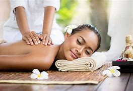
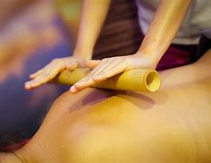
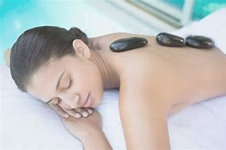
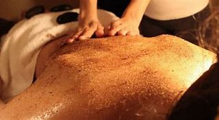

Masaje relajante
Es el típico masaje para eliminar estrés y tensión tras un día duro de trabajo. Se aplica en todo el cuerpo, con énfasis en la espalda y en la parte baja del cuello de forma lenta, con movimientos pausados y largos, pero con una presión firme y progresiva. Esto tiene como objetivo descargar el estrés y la tensión acumulada.
Es el típico masaje para eliminar estrés y tensión tras un día duro de trabajo. Se aplica en todo el cuerpo, con énfasis en la espalda y en la parte baja del cuello de forma lenta, con movimientos pausados y largos, pero con una presión firme y progresiva. Esto tiene como objetivo descargar el estrés y la tensión acumulada.

Masaje con cañitas de bambú
Hace miles de años los chinos observaron que a través de las cañas de bambú circulaba energía. Fue así como lo aplicaron sobre el cuerpo humano y descubrieron que además de realizar un suave masaje, ayuda a activar la energía del organismo. Este masaje se sirve de la elasticidad y robustez de los troncos de bambú para transportarte a un estado de relajación y disipar tensiones acumuladas.
Hace miles de años los chinos observaron que a través de las cañas de bambú circulaba energía. Fue así como lo aplicaron sobre el cuerpo humano y descubrieron que además de realizar un suave masaje, ayuda a activar la energía del organismo. Este masaje se sirve de la elasticidad y robustez de los troncos de bambú para transportarte a un estado de relajación y disipar tensiones acumuladas.

Masaje con piedras volcánicas
Es el masaje sueco junto con el uso de piedras calientes de basalto. Las piedras se colocan a lo largo de los meridianos para relajar los músculos y restaurar la armonía del cuerpo. Luego, el terapeuta aplica una leve presión sobre las piedras y las utiliza para masajear el cuerpo, aliviando la tensión muscular y disminuyendo el estrés.
Es el masaje sueco junto con el uso de piedras calientes de basalto. Las piedras se colocan a lo largo de los meridianos para relajar los músculos y restaurar la armonía del cuerpo. Luego, el terapeuta aplica una leve presión sobre las piedras y las utiliza para masajear el cuerpo, aliviando la tensión muscular y disminuyendo el estrés.

Masaje de exfoliación corporal
Un exfoliante corporal es un tratamiento corporal popular que es básicamente un tratamiento facial para el cuerpo : exfolia e hidrata la piel, dejándola suave y tersa. un exfoliante corporal se realiza con un material abrasivo, generalmente sal marina o azúcar, mezclado con algún tipo de aceite de masaje y un aceite aromático como los aceites esenciales . si el exfoliante utiliza sal, que podría ser llamado un lavado de sal , resplandor sal , o el mar lavado de sal .
Un exfoliante corporal es un tratamiento corporal popular que es básicamente un tratamiento facial para el cuerpo : exfolia e hidrata la piel, dejándola suave y tersa. un exfoliante corporal se realiza con un material abrasivo, generalmente sal marina o azúcar, mezclado con algún tipo de aceite de masaje y un aceite aromático como los aceites esenciales . si el exfoliante utiliza sal, que podría ser llamado un lavado de sal , resplandor sal , o el mar lavado de sal .